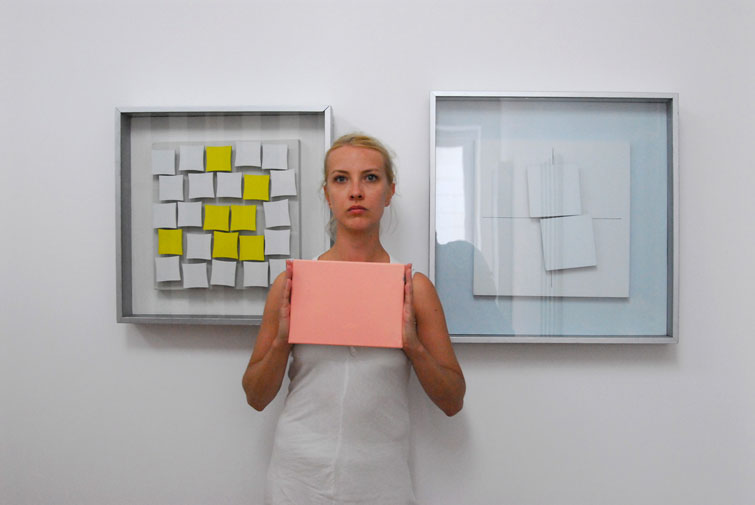
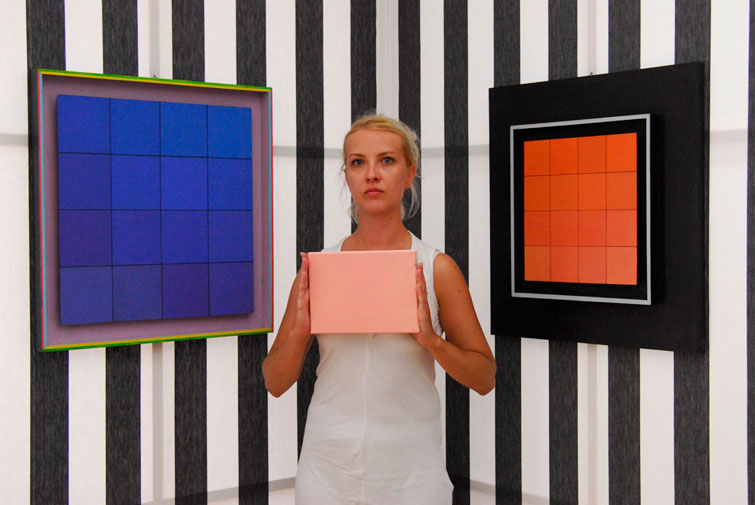
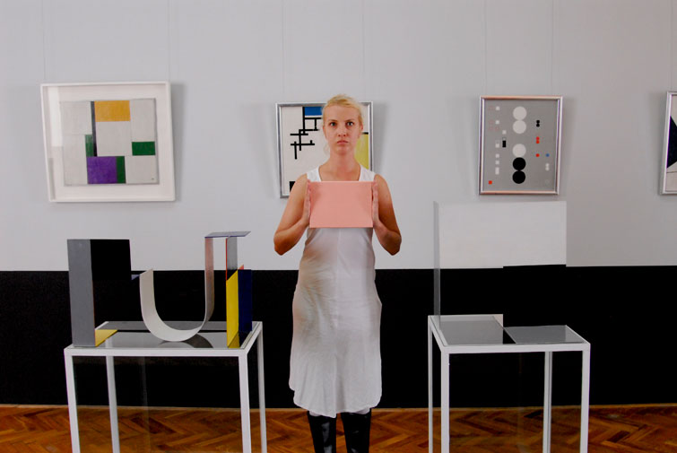
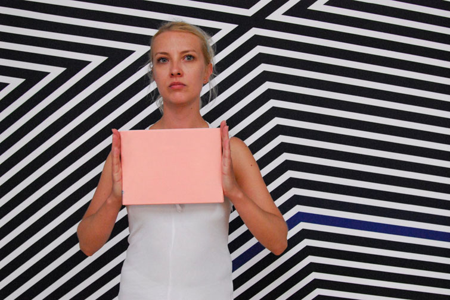
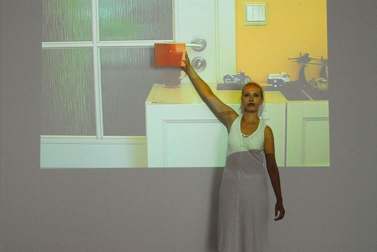
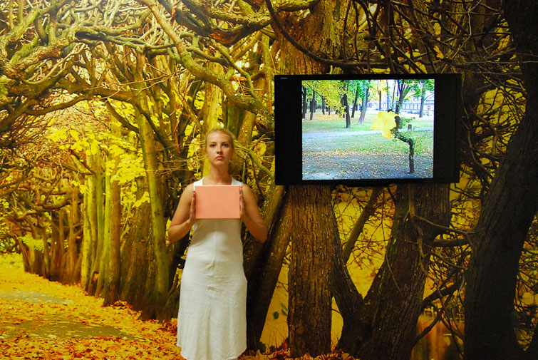
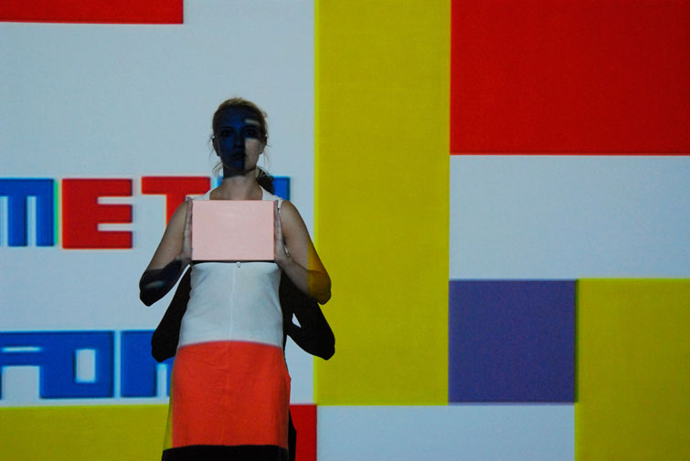
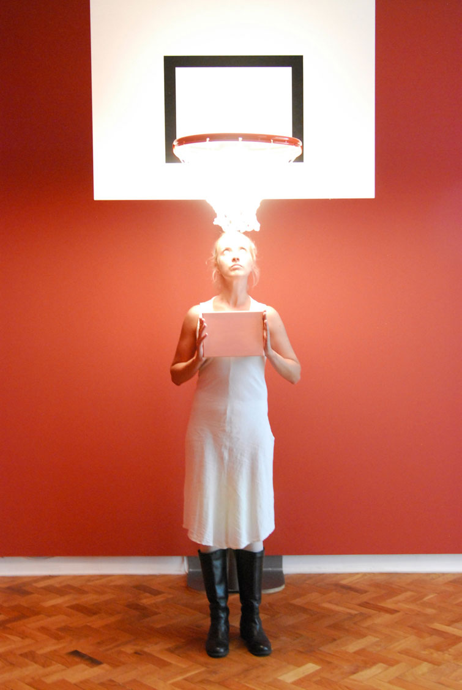

7. WALKA O ODPOWIEDNI CZAS I MIEJSCE.









WOJNA DWUNASTOMIESIECZNA. Galeria MS1, Lodz, 2013.
Akcja odbyla sie bez zgody i aprobaty dyrekcji galerii.
Jak sie pokazywac to w odpowiednim czasie, miejscu i doborowym towarzystwie, wtedy nawet wypicie szklanki wody bedzie sztuka - jak powiedzial Jan Swidzinski.
fot. Norbert Trzeciak.